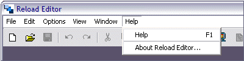

Help Menu
The Help Menu has just two elements:

Help
Help is available by choosing this menu item, or by pressing F1.
About Reload Editor ...
This screen gives details of the RELOAD Editor software, including contributors, copyright and contact information. It is also the easiest place to find out the version number and date of RELOAD Editor.